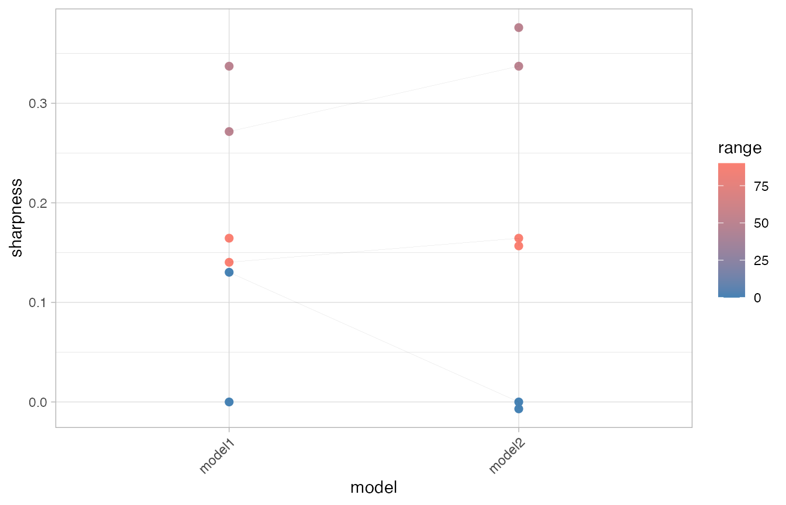
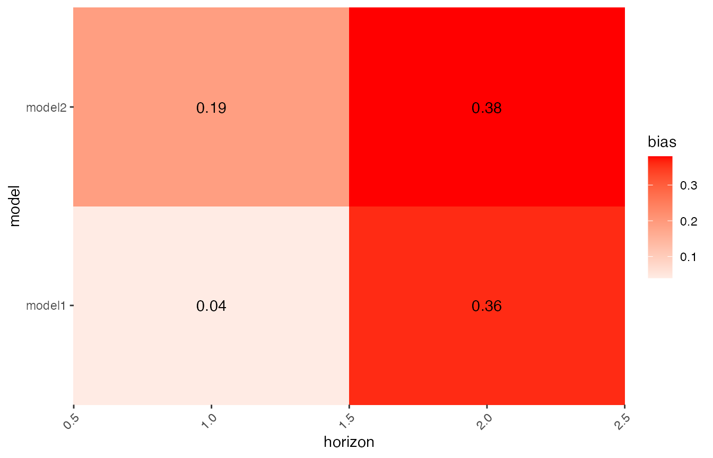

Introduction
The scoringutils package provides a collection of metrics and proper scoring rules that make it simple to score forecasts against the true observed values. You can either automatically score predictions using eval_forecasts with an appropriately shaped data.frame as input, or you can access the different scoring metrics directly using lower level functions.
Scoring Forecasts Directly
A variety of metrics and scoring rules can be accessed through the scoringutils package.
Bias
The function bias determines bias from predictive Monte-Carlo samples, automatically recognising whether forecasts are continuous or integer valued.
For continuous forecasts, Bias is measured as \[B_t (P_t, x_t) = 1 - 2 \cdot (P_t (x_t))\]
where \(P_t\) is the empirical cumulative distribution function of the prediction for the true value \(x_t\). Computationally, \(P_t (x_t)\) is just calculated as the fraction of predictive samples for \(x_t\) that are smaller than \(x_t\).
For integer valued forecasts, Bias is measured as
\[B_t (P_t, x_t) = 1 - (P_t (x_t) + P_t (x_t + 1))\]
to adjust for the integer nature of the forecasts. In both cases, Bias can assume values between -1 and 1 and is 0 ideally.
## integer valued forecasts true_values <- rpois(30, lambda = 1:30) predictions <- replicate(200, rpois(n = 30, lambda = 1:30)) bias(true_values, predictions) #> [1] -0.125 -0.915 0.000 0.330 -0.490 0.605 0.795 0.250 -0.155 -0.020 #> [11] 0.400 0.755 -0.515 -0.040 0.400 0.565 0.745 -0.195 0.195 -0.790 #> [21] 0.035 0.215 -0.115 -0.740 0.325 -0.945 0.530 0.670 -0.950 0.580 ## continuous forecasts true_values <- rnorm(30, mean = 1:30) predictions <- replicate(200, rnorm(30, mean = 1:30)) bias(true_values, predictions) #> [1] 0.85 0.81 0.96 -0.54 -0.23 -0.94 0.11 0.59 0.60 0.51 0.29 -0.63 #> [13] 0.06 0.15 -0.94 -0.16 -0.03 -0.97 -0.54 -0.74 -0.08 0.82 -0.40 -0.09 #> [25] 0.11 0.88 -0.59 0.56 -0.86 0.30
Calibration
Calibration or reliability of forecasts is the ability of a model to correctly identify its own uncertainty in making predictions. In a model with perfect calibration, the observed data at each time point look as if they came from the predictive probability distribution at that time.
Equivalently, one can inspect the probability integral transform of the predictive distribution at time t,
\[u_t = F_t (x_t)\]
where \(x_t\) is the observed data point at time \(t \text{ in } t_1, …, t_n\), n being the number of forecasts, and \(F_t\) is the (continuous) predictive cumulative probability distribution at time t. If the true probability distribution of outcomes at time t is \(G_t\) then the forecasts \(F_t\) are said to be ideal if \(F_t = G_t\) at all times \(t\). In that case, the probabilities ut are distributed uniformly.
In the case of discrete outcomes such as incidence counts, the PIT is no longer uniform even when forecasts are ideal. In that case a randomised PIT can be used instead:
\[u_t = P_t(k_t) + v \cdot (P_t(k_t) - P_t(k_t - 1) )\]
where \(k_t\) is the observed count, \(P_t(x)\) is the predictive cumulative probability of observing incidence \(k\) at time \(t\), \(P_t (-1) = 0\) by definition and \(v\) is standard uniform and independent of \(k\). If \(P_t\) is the true cumulative probability distribution, then \(u_t\) is standard uniform.
The function checks whether integer or continuous forecasts were provided. It then applies the (randomised) probability integral and tests the values \(u_t\) for uniformity using the Anderson-Darling test.
As a rule of thumb, there is no evidence to suggest a forecasting model is miscalibrated if the p-value found was greater than a threshold of \(p >= 0.1\), some evidence that it was miscalibrated if \(0.01 < p < 0.1\), and good evidence that it was miscalibrated if \(p <= 0.01\). In this context it should be noted, though, that uniformity of the PIT is a necessary but not sufficient condition of calibration. It should als be noted that the test only works given sufficient samples, otherwise the Null hypothesis will often be rejected outright.
Continuous Ranked Probability Score (CRPS)
Wrapper around the crps_sample function from the scoringRules package. For more information look at the manuals from the scoringRules package. The function can be used for continuous as well as integer valued forecasts. Smaller values are better.
true_values <- rpois(30, lambda = 1:30) predictions <- replicate(200, rpois(n = 30, lambda = 1:30)) crps(true_values, predictions) #> [1] 0.187750 0.637700 1.169275 1.194175 0.534450 0.587650 1.137525 2.648100 #> [9] 0.802225 1.590900 1.447675 0.912025 0.793575 1.321400 2.227450 3.909250 #> [17] 1.166650 3.128350 1.376725 2.476950 2.689650 1.999700 4.690850 4.433300 #> [25] 4.824975 6.572375 1.641800 3.420100 1.316550 1.224425
Dawid-Sebastiani Score (DSS)
Wrapper around the dss_sample function from the scoringRules package. For more information look at the manuals from the scoringRules package. The function can be used for continuous as well as integer valued forecasts. Smaller values are better.
true_values <- rpois(30, lambda = 1:30) predictions <- replicate(200, rpois(n = 30, lambda = 1:30)) dss(true_values, predictions) #> [1] -0.08883118 2.41918329 2.35345215 2.61105708 3.79563074 2.08451541 #> [7] 2.07897571 2.23947676 2.32316749 4.89711368 2.50879524 3.83415539 #> [13] 2.87894706 3.16879945 2.84204224 4.38824694 2.83399816 3.03012928 #> [19] 4.30934359 4.28286698 3.72004113 3.17701316 4.03388130 3.76093360 #> [25] 3.23995793 4.17364556 3.16378311 5.52327948 5.09327640 3.34998046
Log Score
Wrapper around the log_sample function from the scoringRules package. For more information look at the manuals from the scoringRules package. The function should not be used for integer valued forecasts. While Log Scores are in principle possible for integer valued foreasts they require a kernel density estimate which is not well defined for discrete values. Smaller values are better.
true_values <- rnorm(30, mean = 1:30) predictions <- replicate(200, rnorm(n = 30, mean = 1:30)) logs(true_values, predictions) #> [1] 1.4569889 1.0900689 1.2287915 1.0777080 1.1246414 1.7243726 1.2327973 #> [8] 2.4179156 3.0734245 1.0386379 1.1061996 1.0362183 2.4548391 2.1261629 #> [15] 2.3203177 1.0493911 0.9481120 1.0051131 1.1790874 1.5105691 0.9602371 #> [22] 2.6776187 0.8966441 1.1993134 1.3618015 1.0346834 1.1855467 1.4915756 #> [29] 1.8705389 1.2256181
Brier Score
The Brier score is a proper score rule that assesses the accuracy of probabilistic binary predictions. The outcomes can be either 0 or 1, the predictions must be a probability that the true outcome will be 1.
The Brier Score is then computed as the mean squared error between the probabilistic prediction and the true outcome.
\[\text{Brier_Score} = \frac{1}{N} \sum_{t = 1}^{n} (\text{prediction}_t - \text{outcome}_t)^2\]
true_values <- sample(c(0,1), size = 30, replace = TRUE) predictions <- runif(n = 30, min = 0, max = 1) brier_score(true_values, predictions) #> [1] 0.4074522
Interval Score
The Interval Score is a Proper Scoring Rule to score quantile predictions, following Gneiting and Raftery (2007). Smaller values are better.
The score is computed as
\[ \text{score} = (\text{upper} - \text{lower}) + \\ \frac{2}{\alpha} \cdot (\text{lower} - \text{true_value}) \cdot 1(\text{true_values} < \text{lower}) + \\ \frac{2}{\alpha} \cdot (\text{true_value} - \text{upper}) \cdot 1(\text{true_value} > \text{upper})\]
where \(1()\) is the indicator function and \(\alpha\) is the decimal value that indicates how much is outside the prediction interval. To improve usability, the user is asked to provide an interval range in percentage terms, i.e. interval_range = 90 (percent) for a 90 percent prediction interval. Correspondingly, the user would have to provide the 5% and 95% quantiles (the corresponding alpha would then be 0.1). No specific distribution is assumed, but the range has to be symmetric (i.e you can’t use the 0.1 quantile as the lower bound and the 0.7 quantile as the upper). Setting weigh = TRUE will weigh the score by \(\frac{\alpha}{2}\) such that the Interval Score converges to the CRPS for increasing number of quantiles.
true_values <- rnorm(30, mean = 1:30) interval_range <- 90 alpha <- (100 - interval_range) / 100 lower <- qnorm(alpha/2, rnorm(30, mean = 1:30)) upper <- qnorm((1- alpha/2), rnorm(30, mean = 1:30)) interval_score(true_values = true_values, lower = lower, upper = upper, interval_range = interval_range) #> [1] 0.2884790 0.6642666 0.1065715 0.2848289 0.7308416 0.2652937 0.1659145 #> [8] 2.1430278 0.2485529 0.2221595 0.2587702 0.2628397 0.3749324 0.3103158 #> [15] 0.2989739 1.1018295 0.6821174 0.2890025 0.2488446 0.2941921 0.2324855 #> [22] 0.1449502 2.4120655 0.7615472 0.1726907 0.1928001 0.2449351 0.4900185 #> [29] 0.2217442 0.1842047
Automatically Scoring Forecasts
The function eval_forecasts automatically scores forecasts. As input you need a data.frame with your predictions. You can use the argument by to specify variables over which to group. If you e.g. have one to seven-day-ahead forecasts in three locations made by two different models, you would specify by = c("model", "horizon", "location"). If you want to average over horizons, but not locations, you would specify by = c("model", "horizon"). If you don’t want any groping, you can specify by = NULL. The default grouping variable is "model". Note that the variables to group over need to be present as columns in the data.
If you want to have one score per observation, you can call the function with the argument summarised = FALSE. The default is summarised = TRUE and the function returns one aggregate score per grouping unit. For more information see ?eval_forecasts.
You can pass down arguments to lower-level functions using .... This could be useful if you e.g. want to weigh the interval score with the argument weigh = TRUE.
Scoring Probability Binary Forecasts
library(data.table) # load example data binary_example <- data.table::setDT(scoringutils::binary_example_data) print(binary_example, 3, 3) #> id model horizon prediction true_value #> 1: 1 model1 1 0.745690691 0 #> 2: 1 model1 2 0.521983484 0 #> 3: 1 model2 1 0.009581771 0 #> --- #> 118: 30 model1 2 0.365684017 0 #> 119: 30 model2 1 0.619222498 0 #> 120: 30 model2 2 0.433455748 0
# score forecasts eval <- scoringutils::eval_forecasts(binary_example, by = c("model", "id", "horizon"), summarise_by = c("model")) print(eval) #> model brier_score #> 1: model1 0.3648722 #> 2: model2 0.3228463
eval <- scoringutils::eval_forecasts(binary_example, by = c("model", "id","horizon")) print(eval, 3, 3) #> model id horizon brier_score #> 1: model1 1 1 5.560546e-01 #> 2: model1 1 2 2.724668e-01 #> 3: model2 1 1 9.181033e-05 #> --- #> 118: model1 30 2 1.337248e-01 #> 119: model2 30 1 3.834365e-01 #> 120: model2 30 2 1.878839e-01
Scoring Quantile Forecasts
Forecasts can be provided in either long or wide format
quantile_example <- data.table::setDT(scoringutils::quantile_example_data_long) print(quantile_example, 3, 3) #> true_value id model prediction boundary range horizon #> 1: 2.659261 1 model1 -0.6448536 lower 90 1 #> 2: 2.659261 1 model1 0.3255102 lower 50 1 #> 3: 2.659261 1 model1 1.0000000 lower 0 1 #> --- #> 718: 30.189608 30 model2 31.3873685 upper 90 2 #> 719: 30.189608 30 model2 30.6399809 upper 50 2 #> 720: 30.189608 30 model2 31.2576984 upper 0 2 quantile_example <- data.table::setDT(scoringutils::quantile_example_data_wide) print(quantile_example, 3, 3) #> true_value id model horizon lower_0 lower_50 lower_90 upper_0 #> 1: 2.659261 1 model1 1 1.000000 0.3255102 -0.6448536 1.0000000 #> 2: 2.659261 1 model1 2 1.761427 -1.0756255 0.6142077 0.9463843 #> 3: 0.822062 2 model1 1 2.000000 1.3255102 0.3551464 2.0000000 #> --- #> 118: 29.446186 29 model2 2 29.750094 28.6346711 27.5081858 29.7113944 #> 119: 30.189608 30 model2 1 30.100000 29.4255102 28.4551464 30.1000000 #> 120: 30.189608 30 model2 2 31.224235 29.1650518 28.2025709 31.2576984 #> upper_50 upper_90 #> 1: 1.674490 2.644854 #> 2: 2.643041 2.354494 #> 3: 2.674490 3.644854 #> --- #> 118: 29.148724 30.393116 #> 119: 30.774490 31.744854 #> 120: 30.639981 31.387368
eval <- scoringutils::eval_forecasts(quantile_example, by = c("model", "id", "horizon"), summarise_by = c("model", "range")) print(eval) #> model range interval_score sharpness underprediction overprediction #> 1: model1 0 0.8879926 0.065132463 0.300326488 0.52253362 #> 2: model1 50 0.7760589 0.304421447 0.179681560 0.29195591 #> 3: model1 90 0.2658170 0.152391127 0.024935181 0.08849074 #> 4: model2 0 0.9215835 -0.003467508 0.298074288 0.62697674 #> 5: model2 50 0.6787509 0.356631485 0.072721303 0.24939811 #> 6: model2 90 0.2721723 0.160614315 0.008071852 0.10348616 #> coverage coverage_deviation bias ae quantile_coverage #> 1: 0.11666667 0.11666667 0.1912281 0.8269027 0.5500000 #> 2: 0.40000000 -0.10000000 0.1912281 1.0804804 0.5916667 #> 3: 0.81666667 -0.08333333 0.1912281 1.6373372 0.5416667 #> 4: 0.08333333 0.08333333 0.2771930 0.9779030 0.6166667 #> 5: 0.53333333 0.03333333 0.2771930 1.0353824 0.6000000 #> 6: 0.85000000 -0.05000000 0.2771930 1.7177012 0.5666667
eval <- scoringutils::eval_forecasts(quantile_example, by = c("model", "id", "horizon")) print(eval, 3, 3) #> model id horizon interval_score sharpness underprediction overprediction #> 1: model1 1 1 0.9322161 0.2006921 0.73152398 0.00000000 #> 2: model1 1 2 0.7961387 0.3251682 0.47097053 0.00000000 #> 3: model1 2 1 0.6376590 0.2006921 0.00000000 0.43696691 #> --- #> 118: model2 29 2 0.2850003 0.1052339 0.11898478 0.06078162 #> 119: model2 30 1 0.2186137 0.2006921 0.01792164 0.00000000 #> 120: model2 30 2 0.4214606 0.2145352 0.00000000 0.20692541 #> coverage coverage_deviation bias ae quantile_coverage #> 1: 0.0 -0.56 -1.0 1.659261 0.0 #> 2: 0.0 -0.56 -1.0 1.399753 0.0 #> 3: 0.4 -0.16 0.9 1.364704 0.8 #> --- #> 118: 0.4 -0.16 0.5 0.859563 0.4 #> 119: 0.8 0.24 -0.5 0.945659 0.4 #> 120: 0.8 0.24 0.5 1.138871 0.6
Scoring Integer Forecasts
integer_example <- data.table::setDT(scoringutils::integer_example_data) print(integer_example, 3, 3) #> id model true_value sample prediction horizon #> 1: 1 model1 6 1 5 1 #> 2: 1 model1 6 2 4 1 #> 3: 1 model1 6 3 3 1 #> --- #> 5998: 30 model2 2 48 5 2 #> 5999: 30 model2 2 49 4 2 #> 6000: 30 model2 2 50 6 2
eval <- scoringutils::eval_forecasts(integer_example, by = c("model", "id", "horizon"), summarise_by = c("horizon")) print(eval) #> horizon sharpness bias dss crps pit_p_val pit_sd #> 1: 1 1.43318 -0.007333333 1.904912 0.8381600 1e-05 0 #> 2: 2 1.53202 0.185333333 1.851858 0.8470867 1e-05 0
eval <- scoringutils::eval_forecasts(integer_example, by = c("model", "id", "horizon")) #> In order to compute PIT values, 'summarise_by' must be different from 'by' print(eval, 3, 3) #> model id horizon sharpness bias dss crps pit_p_val pit_sd #> 1: model1 1 1 1.4826 -0.62 1.1168405 0.6444 NaN NaN #> 2: model1 1 2 1.4826 -0.32 1.0191428 0.3800 NaN NaN #> 3: model2 1 1 1.4826 -0.48 0.6288598 0.4156 NaN NaN #> --- #> 118: model1 30 2 1.4826 0.96 6.0858760 2.8192 NaN NaN #> 119: model2 30 1 1.4826 0.96 6.0791013 2.2892 NaN NaN #> 120: model2 30 2 1.4826 1.00 6.1867623 2.8552 NaN NaN
Scoring Continuous Forecasts
continuous_example <- data.table::setDT(scoringutils::continuous_example_data) print(continuous_example, 3, 3) #> id model true_value sample prediction horizon #> 1: 1 model1 0.03007379 1 -0.203426069 1 #> 2: 1 model1 0.03007379 2 0.007621269 1 #> 3: 1 model1 0.03007379 3 -2.086657003 1 #> --- #> 5998: 30 model2 -2.93749990 48 -0.079900522 2 #> 5999: 30 model2 -2.93749990 49 -1.178524017 2 #> 6000: 30 model2 -2.93749990 50 0.638750918 2
eval <- scoringutils::eval_forecasts(continuous_example, by = c("model", "id", "horizon"), summarise_by = "model") print(eval) #> model log_score sharpness bias dss crps pit_p_val pit_sd #> 1: model1 1.761008 1.176009 0.02533333 1.648494 0.7603090 1e-05 NaN #> 2: model2 1.795614 1.176819 0.10200000 1.623213 0.7633677 1e-05 NaN
eval <- scoringutils::eval_forecasts(continuous_example, by = c("model", "id", "horizon")) #> In order to compute PIT values, 'summarise_by' must be different from 'by' print(eval, 3, 3) #> model id horizon log_score sharpness bias dss crps #> 1: model1 1 1 1.093753 1.1283071 0.04 -0.08898351 0.2580341 #> 2: model1 1 2 1.349629 1.2956109 0.28 0.95841907 0.4086111 #> 3: model2 1 1 1.087163 1.0705271 -0.04 0.07987778 0.2556484 #> --- #> 118: model1 30 2 3.354443 1.5685235 0.96 6.70942158 2.7614870 #> 119: model2 30 1 3.107910 0.9985101 0.96 6.58413707 2.3375785 #> 120: model2 30 2 4.638794 1.3175408 1.00 6.57095652 2.8273520 #> pit_p_val pit_sd #> 1: NaN NaN #> 2: NaN NaN #> 3: NaN NaN #> --- #> 118: NaN NaN #> 119: NaN NaN #> 120: NaN NaN
Plotting Scores
A few default plots are available in the scoringutils package.
Create coloured table of scores
scores <- scoringutils::eval_forecasts(scoringutils::quantile_example_data_wide, by = c("model", "id", "horizon"), summarise_by = "model") scoringutils::score_table(scores)

Show correlation between metrics
scores <- scoringutils::eval_forecasts(scoringutils::quantile_example_data_wide, by = c("model", "id", "horizon"), summarise_by = c("model", "id")) scoringutils::correlation_plot(scores)

Show components of the weighted interval score
scores <- scoringutils::eval_forecasts(scoringutils::quantile_example_data_wide, by = c("model", "id", "horizon"), summarise_by = c("model", "horizon")) scoringutils::wis_components(scores, x = "model", facet_formula = ~ horizon)

Range plots
scores <- scoringutils::eval_forecasts(scoringutils::quantile_example_data_long, by = c("model", "id", "horizon"), summarise_by = c("model", "horizon", "range")) scoringutils::range_plot(scores, x = "model")

scoringutils::range_plot(scores, y = "sharpness", x = "model")

Heatmap of scores
scores <- scoringutils::eval_forecasts(scoringutils::quantile_example_data_long, by = c("model", "id", "horizon"), summarise_by = c("model", "horizon")) scoringutils::score_heatmap(scores, x = "horizon", metric = "bias")
